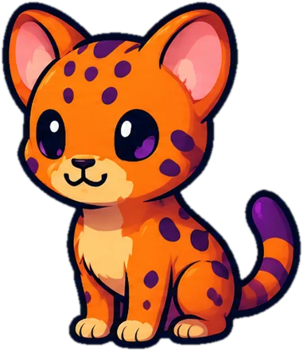

 Fire
FireTap a stage to read its story.
Toxkit is a tiny orange kitten with large dark spots and a short tail that curls upward. Wisps of purplish-grey smoke drift off its fur as if it is perpetually smouldering. Its eyes are wide and golden, and it pads through the Shadow Caves with a kitten's clueless boldness, leaving tiny scorched paw-prints on stone. It licks its spots when nervous - which releases a brief burst of fragrant but mildly toxic smoke. The guardians first spotted one rolling in a warm volcanic vent, purring.
Field note: Its spots are hotter to the touch than the surrounding fur - tiny venom-fire glands just waiting to be fully lit.
Shadow Caves. Toxkit and its family are found in the Shadow Caves. See everyone who lives there.
Share a Bond Food that matches its types to become friends. Toxkit loves:
A Bond Food is not a trick. It joins your spirit with the Kimuro's spirit, and only when it chooses you.
Print the Kimuro adventure packs: mazes, cards, a board game and Bond Mark medals.
See the printable packs